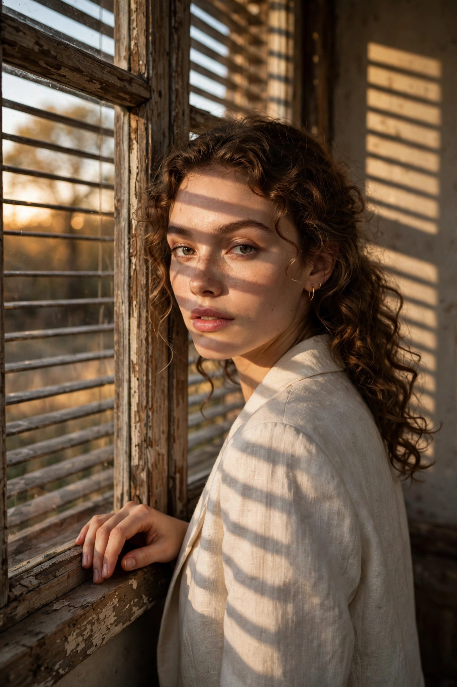

Chân dung thời trang Banapro
Banapro A high-fashion editorial portrait of a young woman standing by a large, rustic wooden window. She is captured in a candid, over-the-shoulder g

Nội dung prompt
Banapro A high-fashion editorial portrait of a young woman standing by a large, rustic wooden window. She is captured in a candid, over-the-shoulder gaze, looking directly into the camera with a soft, natural expression. One hand is gently resting on the window frame. Lighting & Atmosphere: The scene is defined by golden hour sunlight streaming through the window, creating a dramatic "blind shadow" or shutter-effect across her face and blouse. The lighting is warm and high-contrast, with a hazy, ethereal atmosphere that emphasizes a quiet, "Film Noir" mood in a modern setting. Wardrobe & Style: She is wearing a translucent, pleated silk chiffon blouse in a muted champagne tone. The fabric is light and airy, catching the backlighting to create a soft glow. Her hair is styled in a tousled, effortless bob with natural texture. Technical Specifications: Lens: Shot on 85mm f/1.4 for a shallow depth of field. Focus: Sharp focus on the eyes with a creamy, soft bokeh background featuring indoor plants and warm interior tones. Quality: 8K resolution, cinematic color grading, fine grain, professional photography. Chatgpt image Ultra-realistic cozy Japanese-Korean café photography featuring a cute young [Japanese/Korean] couple sitting together naturally in a trendy aesthetic café. The young couple should look stylish and youthful, wearing [fashion style/outfit colors], smiling softly and enjoying desserts together. The table is beautifully filled with [desserts/foods] such as pancakes, strawberry cakes, macarons, croissants, pastries, iced coffees, matcha lattes, fruit desserts, and aesthetic drinks arranged in a visually satisfying composition. Add small aesthetic café props like [flowers/ribbons/books/candles/pearls/notebooks] on the table for a premium Pinterest moodboard feel. Soft [lighting style] lighting enters through the café windows creating dreamy highlights, creamy shadows, glossy reflections on drinks, and realistic dessert textures. Background should contain softly blurred [Japanese/Korean] signs, glowing café boards, handwritten Japanese text, neon typography, and aesthetic city café elements for an authentic Tokyo/Seoul vibe. Add cute scrapbook-style doodles and handwritten notes around the image in [doodle color] ink — tiny hearts, stars, sparkles, ribbons, arrows, smiley sketches, bows, diary stickers, and handwritten café notes. Color palette should focus on [color theme] tones. Style inspired by viral Pinterest café photography, Korean lifestyle aesthetics, Japanese cozy café culture, dreamy Gen-Z romance mood, shallow depth of field, cinematic composition, ultra realistic food textures, soft blurry background, ultra detailed realistic photography, clean aesthetic layout, 8k.
Prompt cùng thể loại
- ChatGPT JSON Character Structure
Cấu trúc JSON quản lý nhân vật chính xác qua nhiều cảnh.
- Movie Poster Cuộc Đời Tôi
Poster phim collage nhiều khoảnh khắc cuộc đời
- Poster du lịch 3D
Poster Infographic Hướng Dẫn Du Lịch 3D Siêu Chân Thực A hyper-realistic 3D travel guide infographic poster…
- Poster người hùng mặt nạ
Poster Đồ Họa Dọc Điện Ảnh Người Hùng Đeo Mặt Nạ A cinematic, vertical graphic poster of a masked vigilante…